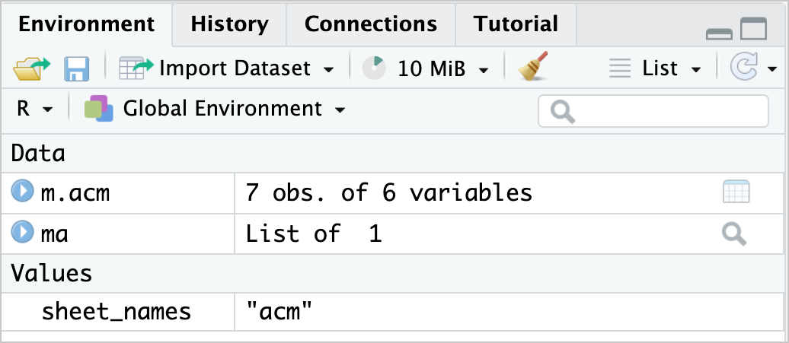
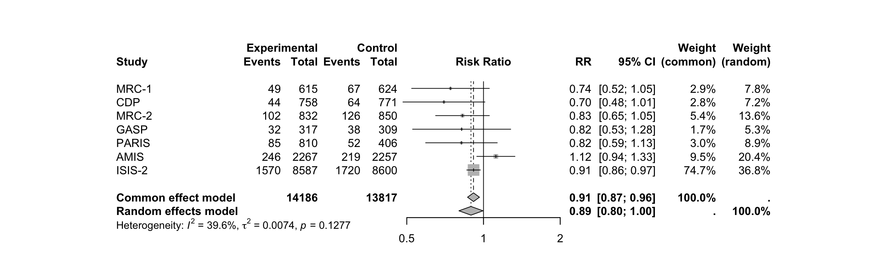

## Criando um novo objeto 'm.acm' e atribuindo a ele a lista 'acm' do objeto 'ma'
m.acm <- ma$acm6 Manipulação de dados no R
6.1 Manipulação de Dados no R com o tidyverse
A manipulação de dados refere-se ao processo de limpar, transformar e reformular dados brutos para torná-los mais adequados para análise. Esse processo é fundamental para garantir que os dados estejam organizados de maneira correta antes de qualquer tipo de modelagem estatística.
6.2 Instalando e Carregando o Pacote Necessário
Para realizar manipulação de dados no R de maneira eficiente, usaremos o pacote tidyverse, que oferece um conjunto de ferramentas poderosas para transformar dados.
Passo 1: Instalar e carregar o tidyverse
install.packages("tidyverse") # Instalar o pacote
library(tidyverse) # Carregar o pacote6.3 Operadores Essenciais para Manipulação de Dados
1. Operador de Atribuição (<- ou =)
O operador de atribuição é usado para criar variáveis e armazenar valores dentro delas. Podemos usar <- ou =, mas o mais recomendado no R é o operador <-.
Exemplo genérico
## Criando um objeto e atribuindo um valor a ele
objeto_nome <- valorExplicação
objeto_nome → Nome do objeto que será criado (utilize nomes descritivos para facilitar a leitura do código).
<-→ Operador de atribuição. O valor localizado à direita será atribuído ao objeto localizado à esquerda.valor → Pode ser um número, texto, vetor, lista, matriz ou qualquer outro objeto do R.
Exemplo aplicado
O que acontece aqui?
Esse código extrai a planilha acm do objeto ma e a armazena em um novo objeto chamado m.acm, permitindo que ela seja manipulada de forma independente.

m.acm.2. Operador de Subconjunto ([])
O operador [] é utilizado para selecionar elementos específicos de um vetor, matriz ou data frame.
Exemplo
ma$acm["Author"] Author
1 MRC-1
2 CDP
3 MRC-2
4 GASP
5 PARIS
6 AMIS
7 ISIS-2Explicação
O comando acima seleciona a coluna Author do objeto ma$acm, retornando todos os valores dessa variável.
3. Operador de Função (())
Os parênteses () são utilizados para chamar funções e passar argumentos para elas.
Exemplo
library(tidyverse)Nesse exemplo, a função library() recebe como argumento o pacote tidyverse, carregando-o para utilização durante a sessão do R.
4. Operador Pipe (%>%)
O operador %>% permite encadear múltiplas operações de maneira clara e intuitiva, evitando a criação de diversos objetos intermediários.
💡 Pense no %>% como “e então”.
Exemplo
metabin(
event.e,
n.e,
event.c,
n.c,
data = ma$acm,
method = "MH",
method.tau = "DL",
sm = "RR",
studlab = Author
) %>% forest()
Explicação
O comando metabin() realiza uma metanálise para dados binários.
O operador %>% envia automaticamente o resultado da metanálise para a função forest(), responsável pela construção do Forest Plot.
Dessa forma, não há necessidade de criar um objeto intermediário contendo o resultado da metanálise antes de gerar o gráfico.
6.4 Convertendo um Conjunto de Dados para um Data Frame
Diferença entre Dataset e Data Frame
Dataset: termo genérico utilizado para qualquer estrutura de dados do R, como vetores, listas, matrizes e data frames.
Data Frame: estrutura bidimensional composta por linhas (observações) e colunas (variáveis), sendo o formato mais utilizado em análises estatísticas.
Por que converter para Data Frame?
Muitos pacotes do R exigem que os dados estejam no formato data frame para que suas funções funcionem corretamente.
Como converter para Data Frame
## Convertendo um objeto para data frame
m.acm <- as.data.frame(m.acm)6.5 Selecionando Variáveis de um Conjunto de Dados
O R não reconhece automaticamente os nomes das variáveis. Para acessá-las, é necessário indicar o objeto ao qual pertencem. ### Erro comum
Tentar utilizar uma variável sem informar o objeto de origem.
Exemplo incorreto
AuthorError:
! objeto 'Author' não encontradoEsse comando retornará um erro, pois o R não sabe onde procurar a variável Author.
1. Selecionando uma única variável
Existem diferentes maneiras de selecionar uma variável específica de um conjunto de dados.
Utilizando o operador $
ma$acm$Author # Seleciona a variável "Author"[1] "MRC-1" "CDP" "MRC-2" "GASP" "PARIS" "AMIS" "ISIS-2"ma$acm$Year # Seleciona a variável "Year"[1] 1974 1976 1979 1979 1980 1980 1988O operador $ permite acessar diretamente uma variável pertencente a um data frame.
Utilizando o operador []
Também é possível selecionar uma única variável utilizando colchetes.
ma$acm["Author"] Author
1 MRC-1
2 CDP
3 MRC-2
4 GASP
5 PARIS
6 AMIS
7 ISIS-2ma$acm["Year"] Year
1 1974
2 1976
3 1979
4 1979
5 1980
6 1980
7 1988Essa abordagem retorna a variável mantendo-a como um data frame.
2. Selecionando um intervalo de linhas
Também podemos selecionar apenas algumas linhas de uma variável.
Exemplo
ma$acm[1:5, "Author"] # Seleciona as linhas 1 a 5 da coluna "Author"[1] "MRC-1" "CDP" "MRC-2" "GASP" "PARIS"ma$acm[3:7, "Year"] # Seleciona as linhas 3 a 7 da coluna "Year"[1] 1979 1979 1980 1980 1988Nesse caso:
1:5indica as linhas que serão selecionadas;"Author"indica a coluna desejada.
3. Selecionando múltiplas colunas
Também é possível selecionar várias colunas simultaneamente.
Utilizando c()
ma$acm[c("Author", "Year")] Author Year
1 MRC-1 1974
2 CDP 1976
3 MRC-2 1979
4 GASP 1979
5 PARIS 1980
6 AMIS 1980
7 ISIS-2 1988A função c() cria um vetor contendo os nomes das colunas que desejamos selecionar.
Utilizando o operador Pipe (%>%)
Outra forma bastante utilizada consiste em utilizar a função select() juntamente com o operador Pipe.
ma$acm %>%
select(Author, Year, event.e) Author Year event.e
1 MRC-1 1974 49
2 CDP 1976 44
3 MRC-2 1979 102
4 GASP 1979 32
5 PARIS 1980 85
6 AMIS 1980 246
7 ISIS-2 1988 1570Esse método costuma ser mais intuitivo e é amplamente utilizado pelos pacotes do tidyverse.
Selecionando múltiplas colunas e um intervalo de linhas
Também podemos selecionar simultaneamente linhas e colunas.
ma$acm[1:5, c("Author", "Year", "event.e")] Author Year event.e
1 MRC-1 1974 49
2 CDP 1976 44
3 MRC-2 1979 102
4 GASP 1979 32
5 PARIS 1980 85Nesse exemplo:
1:5seleciona as cinco primeiras linhas;c("Author", "Year", "event.e")seleciona as três colunas desejadas.
6.6 Resumo do Tutorial
Ao final deste capítulo, aprendemos os principais conceitos relacionados à manipulação de dados no R.
Em resumo:
Instalamos e carregamos o pacote
tidyverse;Aprendemos a utilizar os principais operadores do R, como
<-,[],$e%>%;Convertimos objetos para o formato data frame quando necessário;
Selecionamos variáveis, linhas e colunas de diferentes maneiras para facilitar a manipulação dos dados.
Esses conceitos serão fundamentais para os próximos capítulos, nos quais começaremos a preparar os conjuntos de dados para a realização das metanálises.